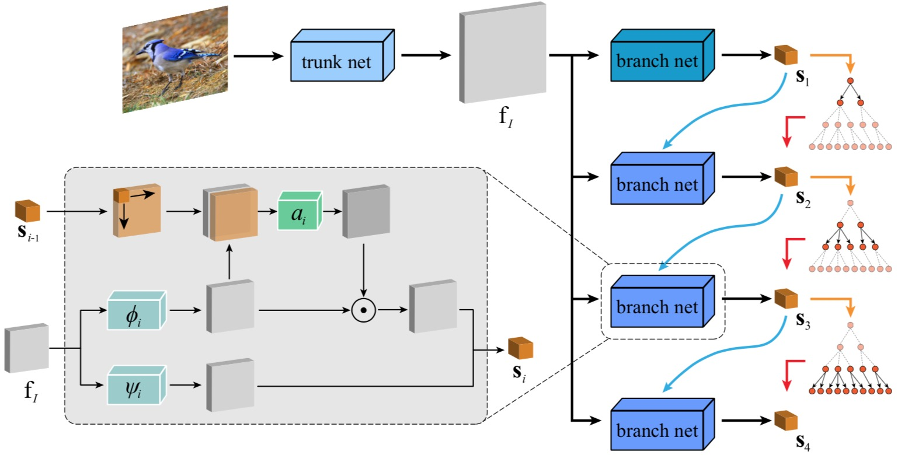

-

Learning to Segment Object Candidates via Recursive Neural Networks.
Tianshui Chen, Liang Lin, Xian Wu, Nong Xiao, and Xiaonan Luo.
to appear in IEEE Transactions on Image Processing (T-IP), 2018.
[PDF] [ProjectPage]
-

Content-Adaptive Sketch Portrait Generation by Decompositional Representation Learning.
Dongyu Zhang, Liang Lin, Tianshui Chen, Xian Wu, Wenwei Tan, and Ebroul Izquierdo.
IEEE Transactions on Image Processing (T-IP), 26(1): 328-339, 2017.
[PDF] [ProjectPage]
-

DISC: Deep Image Saliency Computing via Progressive Representation Learning.
Tianshui Chen, Liang Lin, Lingbo Liu, Xiaonan Luo, and Xuelong Li.
IEEE Transactions on Neural Networks and Learning Systems (T-NNLS), 27(6): 1135-1149, 2016.
[PDF] [Code] [ProjectPage]
Journal papers
-

Fine-Grained Representation Learning and Recognition by Exploiting Hierarchical Semantic Embedding.
Tianshui Chen, Wenxi Wu, Yuefang Gao, Le Dong, Xiaonan Luo, Liang Lin.
Proc. of ACM International Conference on Multimedia (ACM MM), 2018. (Oral Presentation).
[PDF] [Code] [ProjectPage]
-

Knowledge-Embedded Representation Learning for Fine-Grained Image Recognition.
Tianshui Chen, Liang Lin, Riquan Chen, Yang Wu, Xiaonan Luo.
Proc. of International Joint Conference on Artificial Intelligence (IJCAI), 2018.
[PDF]
-

Deep Reasoning with Knowledge Graph for Social Relationship Understanding.
Tianshui Chen†, Zhouxia Wang†, Jimmy Ren, Weihao Yu, Hui Cheng, Liang Lin.
Proc. of International Joint Conference on Artificial Intelligence (IJCAI), 2018. (†co-first authors).
-

Learning a Wavelet-like Auto-Encoder to Accelerate Deep Neural Networks.
Tianshui Chen, Liang Lin, Wangmeng Zuo, Xiaonan Luo, and Lei Zhang.
Proc. of AAAI Conference on Artificial Intelligence (AAAI), 2018. (Oral Presentation).
[PDF] [Code] [ProjectPage]
-

Recurrent Attentional Reinforcement Learning for Multi-label Image Recognition.
Tianshui Chen, Zhouxia Wang, Guanbin Li, and Liang Lin.
Proc. of AAAI Conference on Artificial Intelligence (AAAI), 2018.
[PDF]
-

Multi-label Image Recognition by Recurrently Discovering Attentional Regions.
Tianshui Chen†, Zhouxia Wang†, Guanbin Li, Ruijia Xu, and Liang Lin.
Proc. of IEEE International Conference on Computer Vision (ICCV), 2017. (†co-first authors).
[PDF]
-

Knowledge-Guided Recurrent Neural Network Learning for Task-oriented Action Prediction.
Liang Lin, Tianshui Chen†, Lili Huang†, Yukang Gan, and Hui Cheng.
Proc. of IEEE International Conference on Multimedia and Expo (ICME), 2017. (The world’s first 10K Best Paper Diamond Award, More info: http://www.ieee-icme.org/sc/award.php, †co-second authors).
[PDF]
-

Character Proposal Network for Robust Text Extraction.
Shuye Zhang, Mude Lin, Tianshui Chen, Lianwen Jin, Liang Lin.
Proc. of IEEE International Conference on Acoustics, Speech and Signal Processing (ICASSP), 2016.
[PDF]
Conference papers